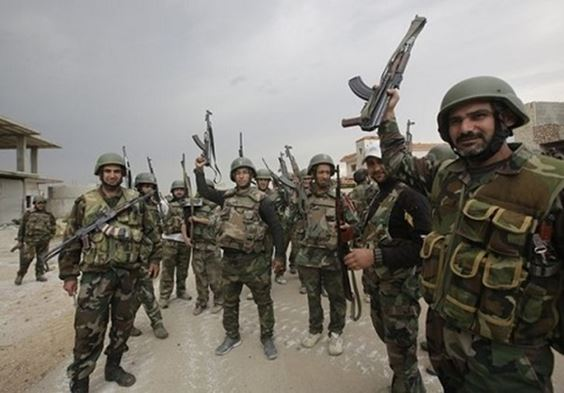
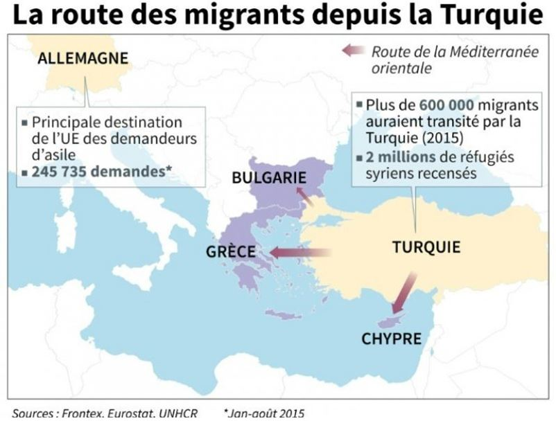

Quand je dis « nous », je sous-entends le Moyen-Orient, l’Europe occidentale et la Russie confondus. Quand je dis « sur la ligne droite finale », je me demande si le peuple syrien parviendrait au bout de ses peines et si les seigneurs du chaos auront des comptes à rendre. Dans les deux cas, le scénario serait beaucoup trop simple, voire idyllique. Mais ce qui saute aux yeux, c’est le symbolisme charnière qui accompagne la reprise d’Alep sachant que la presse titrait il y a quelques jours la récupération de 40 % des quartiers d’Alep-Est. C’est alors qu’interviennent deux évènements fort intéressants et, de prime abord, aucunement liés.
Evènement numéro 1. Erdogan annonce l’introduction des troupes turques en Syrie dans le but, clair et sans concession, de faire tomber « le régime sanglant d’Assad ». La rhétorique pathétique dont il use à ce propos est tout aussi déroutante que l’annonce d’un évènement ... qui n’en est pas un depuis voilà un peu plus de trois mois.
Pour rappel, l’opération « Bouclier de l’Euphrate » a été officiellement lancée le 24 août 2016 sauf que l’objectif qui avait alors été annoncé visait essentiellement les Kurdes syriens dont on ne peut que reconnaître le rôle fondamental dans la répression de Daesh de même que le danger qu’ils représentent pour une Turquie latemment néo-ottomane qui fera tout ce qui est en son pouvoir pour empêcher la jonction des zones kurdes dont il ne restera plus qu’à proclamer l’autonomie post-factum. Or, fin novembre, pour la première fois depuis le début de l’escalade turco-syrienne, les forces aériennes syriennes ont frappé les positions turques en réponse aux représailles récurrentes effectuées par celles-ci contre les forces démocratiques syriennes (FDS), une coalition toute récente, principalement kurde avec des milices chrétiennes et des éléments de l’ancienne ASL qui, exceptionnellement, n’ont pas prêté allégeance à la nébuleuse salafiste. Face à une réaction tout à fait prévisible, je dirais même saine de la part de Damas qui cherche à sécuriser des frontières déjà plus que poreuses, on constate qu’Erdogan n’a fait que trouver un prétexte pour boucler une partie d’échec coûteuse, sanglante, étalée sur cinq ans malgré les pronostics ‘optimistes’ inspirés au départ par les scénarios irakien et libyen. Sur ce point-là, les intérêts d’Ankara sont bien ceux de l’OTAN. Ses arguments reprennent d’ailleurs les inepties de Zijad Majed et co pour qui la reprise d’Alep se limite au bombardement de l’infrastructure syrienne et au meurtre systématique et massif des civils.
Evènement numéro 2. Approximativement à la même date, le 25 novembre, Kiev annonce des exercices de tirs de missiles en Crimée, spécifiquement au-dessus de Simferopol. Prise comme telle, c’est-à-dire sans une lecture d’ensemble soumise à la gravité des enjeux de cette fin d’année, ladite annonce est ubuesque. Comment peut-on propulser des missiles dans l’espace aérien d’un autre Etat ? Or, Kiev insiste sur son droit sans présenter aucun argument digne de ce nom si ce n’est la vieille rengaine, Crimée = territoire occupé. Outre le fait qu’il y ait violation de la convention de Chicago (1944) relative à l’aviation civile internationale, on pourrait frôler une nouvelle tragédie apparentée à celle du MH17 malaysien en 2014.
Une semaine plus tard, nous apprenons que l’Armée arabe syrienne (AAS) est sur le point de crever l’abcès islamiste qui a longuement mûri dans Alep-Est. Conjointement aux frappes syrienne et russe, l’AAS jouit du soutien du Hezbollah et de deux brigades palestiniennes dans les opérations menées au sol. Nonobstant les cris d’orfraie des technocrates atlantistes et des journaleux occidentaux qui s’obstinent à parler de « rébellion » (voir à ce sujet le démenti intransigeant de Georges Malbrunot !), la libération totale d’Alep est prévue d’ici le fin de l’année.
Toujours une semaine plus tard, nous apprenons que les exercices de l’armée ukrainienne se sont finalement déroulés dans l’Oblast de Kherson et pour cause : la Russie a tôt fait de pointer ses S300VM et ses Anteï-2500 sur le ciel de Crimée. Dans le cas syrien, on sait qu’il y a eu un entretien téléphonique entre Poutine et Erdogan suivi de la ratification de l’accord sur le Turkish Stream. On ignore les termes de cet entretien mais le résultat semble aller à l’encontre des intérêts de l’Occident militariste. Dans le deuxième cas, l’Ukraine préparait une provocation sans queue ni tête clairement commanditée de l’extérieur. Là encore, la riposte s’est faite dans le cadre prescrit par le droit international, sans épanchements hystériques.
Ces deux provocations, si stupides ou surannées qu’elles soient, témoignent d’un phénomène saisissant qui s’inscrit dans la lignée eschatologique de cette année qui s’en va : de l’impuissance grandissante d’un Système complétement affolé. Quel que soit l’aplomb manifesté par les médias bien-pensants, on relève le déchantement des peuples européens par rapport aux politiques menées ces dernières décennies par les élites mondialistes. L’élection de Trump, la victoire de Fillon aux primaires, les revirements de l’Europe balkanique avec l’avènement au pouvoir de deux candidats souverainistes en Bulgarie et en Moldavie, voilà autant de facteurs préparant le basculement de l’ancien Système. Dans cette énumération brève et pourtant prégnante, l’élément le plus pesant est bien sûr l’élection de Donald Trump.
Je suis loin de me faire des illusions sur ses intentions isolationnistes, c’est-à-dire un éventuel retour à la doctrine Monroe élargie au Moyen-Orient. Primo, parce que le CMI ne lui en laissera jamais le loisir. Et il est vrai que dans l’hypothèse de son application, les USA n’auront plus les moyens de leurs ambitions ce qui entraînerait aussitôt des troubles titanesques avec, pour conséquence plausible, l’éclatement des States. Secundo, parce qu’il n’y a pas d’unité au sein des instances du pouvoir US. Le fait qu’on ait laissé Trump accéder au pouvoir ne signifie pas qu’on le laisserait réaliser chacun des points de son programme électoral. Loin s’en faut. Si donc Trump ne peut revenir sur les principes tant opportunistes que messianiques du bellicisme US, il est cependant en mesure de bloquer le déploiement d’un scénario catastrophique pour le monde arabo-musulman laïc et mauvais pour la Russie – la chute de Damas et l’embrasement immédiat de l’Iran. Il est donc crucial d’accumuler les provocations avant son inauguration en espérant que le Kremlin finisse par mordre à l’hameçon ou que son allié, en l’occurrence le gouvernement d’Assad, fasse un faux pas tellement significatif qu’il motiverait une intervention massive de l’OTAN. Je ne crois pas que Trump puisse partager le sort de Kennedy malgré les traits d’esprit déplacés de certains journalistes qui ont presque explicitement appelé à son meurtre, mais il n’est pas exclu que sa volonté d’atténuation du hard power américain puisse se heurter à une donne plus complexe que celle de l’heure présente.
L’Europe occidentale encourt quant à elle un danger notable. Je vois mal comment elle pourrait y faire face. On parle de plus en plus du retour des djihadistes européens dans leurs pays d’origine. Mais ce n’est que le sommet de l’iceberg. Il est envisageable que Daesh, un Etat en gestation doué pour détruire et tuer, une fois bouté hors de Syrie et d’Irak (car la libération de Mossoul est compatible avec la politique US de déplacement des mercenaires vers la Syrie), descendent en lice contre l’Europe mécréante avec sa dévirilisation promue au rang d’idéologie et ses valeurs consuméristes. Et de un.
Et de deux, bien que les menaces d’Erdogan commencent à lasser, il n’est pas exclu que le Sultan, lassé lui aussi de négocier avec l’UE, finisse par ouvrir le robinet migratoire. J’en veux pour preuve la critique par Erdogan, début octobre, du Traité de Lausanne sur les frontières de la Turquie. A bien y réfléchir, on s’aperçoit que le renouveau de l’empire ottoman appuie plus qu’il ne contredit le projet de restauration du Califat dans les frontières acquises à l’âge d’or du califat abbasside. A cet égard, il n’y a aucune raison pour que la Turquie n’ouvre pas les frontières aux migrants.
Que le monde dans son état actuel roule sur une ligne droite finale, c’est une certitude. D’où, entre autres, le durcissement de la doctrine de politique étrangère russe et le souci d’unité interétatique qui a fait que l’on a remplacé « les Russes » par les « peuples habitant la Russie » et le terme « confession (s) » par celui de « civilisation (s) ». Le siège d’Alep levé et la Turquie allant au bout de ses velléités dans un sens comme dans un autre, nous verrons où mène cette ligne accélératrice.

Partager cette page